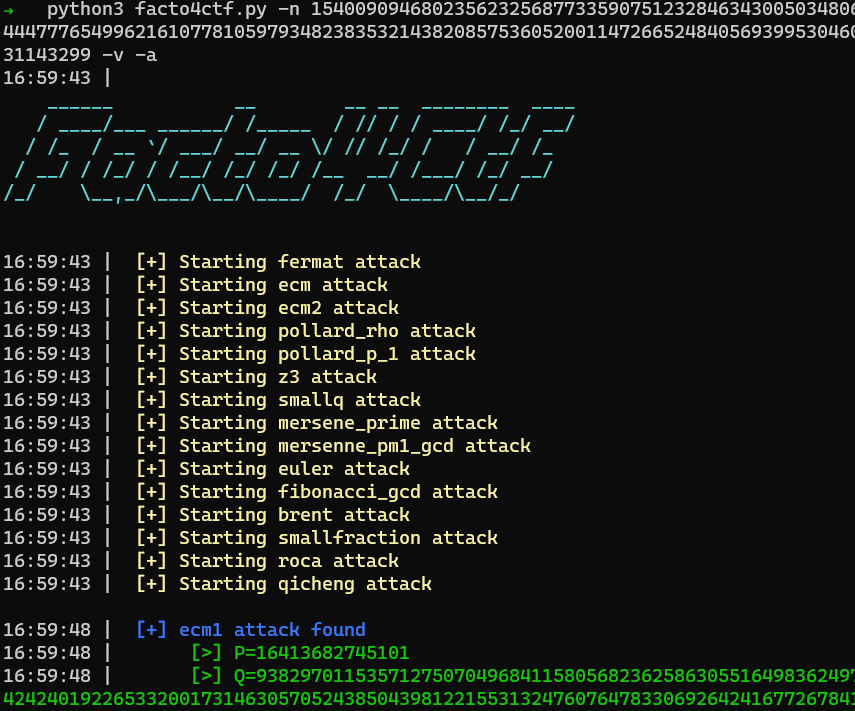
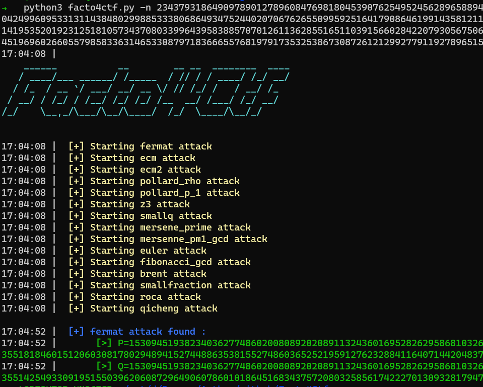

Factor Master | Tjctf 2022
Fichier(s)
Necessaires
- Python3 + Pwntools
Flag
tjctf{S0_y0u_r34lly_c4n_F4c7t0r_4ny7th1nG_c36f63cfe73c}
Solution détaillée
Le challenge se décompose en 3 parties : 3 fois le serveur va nous fournir un nombre et nous allons devoir le factoriser en 2 produits de nombres premiers ; à la manière d’un chiffrement RSA.
Commencons directement avec la première étape:
Etape 1 :
def challenge1():
p = getPrime(44)
q = getPrime(1024)
n = p * q
return [p, q], n
On remarque tous de suite de p est bien plus petit que q . On peut donc facilement trouver les facteurs avec :
- Pollard Rho
- ECM factorization
On peut le vérifier avec un tool que j’ai écris : Facto4Ctf
On trouve : 
Etape 2 :
Voici le code :
def challenge2():
p = getPrime(1024)
q = p + getRandomInteger(524)
if q % 2 == 0: q += 1
while not isPrime(q): q += 2
n = p * q
return [p, q], n
q = p + getRandomInteger(524) Nous indique que p et q vont être trés proche . Ainsi une attaque Fermat va être trés éfficace !
On peut ainsi re-tester avec Facto4Ctf :

Voici le code pour une factorisation via l’attaque fermat:
def fermat(N):
a = int(gmpy.root(N,2)[0])+1
b = a*a -N
c = int(gmpy.root(b,2)[0])
not_square = (c*c != b)
while not_square:
a = a +1
b = a*a -N
c = int(gmpy.root(b,2)[0])
not_square = (c*c != b)
p = a-c
q = q=N//p
return [p,q]
Etape 3 :
def challenge3():
small_primes = [n for n in range(2,10000) if isPrime(n)]
def gen_smooth(N):
r = 2
while True:
p = random.choice(small_primes)
if (r * p).bit_length() > N:
return r
r *= p
p = 1
while not isPrime(p):
p = gen_smooth(1024) + 1
q = getPrime(1024)
n = p * q
return [p, q], n
Tous d’abord , le script stocke tous les nombres premiers allant de 2 à 10000 dans small_primes Puis , il va générer le nombre premier p comme un produit de cette liste et va ajouter 1
On peut donc écrire p comme : p = 2*k + 1 avec k : un produit de petits nombres premiers
Cette écriture nous à permis de comprendre l’attaque Pollard p-1 , grâce à laquelle en utilisant l’exponentiation modulaire : on retrouve un facteur de n
def pollard_p_1(n):
small_primes = [n for n in range(2,10000) if isPrime(n)]
x = 2
for elt in small_primes:
x*=elt
for elt in small_primes:
x*=elt
for elt in small_primes:
x*=elt
q = GCD((pow(2,x,n)-1)%n,n)
p = n//q
return [p,q]
Le code final :
Voici l’exploit final pour avoir une version automatiser:
from pwn import *
from factordb.factordb import FactorDB
import gmpy
from sage.all import *
from Crypto.Util.number import isPrime,GCD
from tqdm import tqdm
from math import log
context.log_level = 'critical'
def ecm_factor(N):
try:
p = q = None
p = ecm.find_factor(N)[0]
q = N // p
if(p*q != N or p==1 ):
return None
else:
return [p,q]
except Exception as ex:
print(ex)
return None
def fermat(N):
a = int(gmpy.root(N,2)[0])+1
b = a*a -N
c = int(gmpy.root(b,2)[0])
not_square = (c*c != b)
while not_square:
a = a +1
b = a*a -N
c = int(gmpy.root(b,2)[0])
not_square = (c*c != b)
p = a-c
q = q=N//p
return [p,q]
def pollard_p_1(n):
small_primes = [n for n in range(2,10000) if isPrime(n)]
x = 2
for elt in small_primes:
x*=elt
for elt in small_primes:
x*=elt
for elt in small_primes:
x*=elt
q = GCD((pow(2,x,n)-1)%n,n)
p = n//q
return [p,q]
def Challenge(proc,i,facto):
print('\n\n'+'#'*100)
print(' [Challenge %s] Getting N ...'%i)
proc.recvuntil(b'n = ')
n = proc.recvline().decode().strip()
print(' [Challenge %s] N = %s'%(i,n))
print(' [Challenge %s] Factoring using %s method ...'%(i,facto.__name__))
proc.recvuntil(b'factors = ?')
res = facto(int(n))
print(' [Challenge %s] Factors found :'%i)
print(' > %s'%res[0])
print(' > %s'%res[1])
if(res[0] > res[1]):
return bytes('%s %s'%(res[1],res[0]),'utf-8')
return bytes('%s %s'%(res[0],res[1]),'utf-8')
proc = remote('tjc.tf',31782)
method = [ecm_factor,fermat,pollard_p_1]
for i in range(1,4):
proc.sendline(Challenge(proc,i,method[i-1]))
proc.interactive()
Et voici le résultat complet!
root@DESKTOP-HNQJECB: /c
➜ python3 factor_master.py
####################################################################################################
[Challenge 1] Getting N ...
[Challenge 1] N = 2049599421257441020570261939966635289544140750291257030231212311711316617526359824013006286571836978353304509480797344618693470124291819006261878268773417597779509550397776302225675954911019411929216419830971899167752724418508389272821125895324832114000483654152570947467200091506316819354994813752087546994721634692766749
[Challenge 1] Factoring using ecm_factor method ...
[Challenge 1] Factors found :
> 17580819592703
> 116581562676869551828139972476401081363945025691746696650245359275978066697366701647043298737353059992707608935796415715635914698839585872532036923957725556315874655515759553298878819923329294665520046801758416352795286548805471800612450037562178275129545071253268609411264372133157713694454077134180874470883
####################################################################################################
[Challenge 2] Getting N ...
[Challenge 2] N = 9297547962477056212001143695050955237572337905646594828890248495088555748318277828660857593007803605697228935865822511657039575850723659589816729063702376237800694547382589634772789490639155783913078716610181918503720512223840306234422205595680736488257716362985134854854815172064022375747998693327616780101119912400487544596714391932840955982661131665078029974287932890053723372472510682190207363741507697210733110537781652013670636218535989669590416979074653294707424278170640534430202354839510102964661513216667587602395311097374701532202643378733309842341194706780621765950892704790354072206330176695156025341559
[Challenge 2] Factoring using fermat method ...
[Challenge 2] Factors found :
> 96423793549502377022485940486123952542789026709961294306340483235741723880389051328464283640634673097714545273681092828725587259441222369855034739461947733827588149250633602918129726244038050840351361307172347056404614749401040512035826268306118310527090689760985744142096250164754234704382420991811035680969
> 96423793549502377022485940486123952542789026709961294306340483235741723880389051328464283640634673097714545273681092828725587259441222369855034739461995303468352869176326000501860768863145132449343351597329202611272973859285678277908082272807526827370736902494708249100996987317841390658189544420915583266111
####################################################################################################
[Challenge 3] Getting N ...
[Challenge 3] N = 144740334774233993681865242632285966435307772766157442849581288037995452984501188206610374158260334026048683086587471158988557400509928466391415415697879103145314312046118208977502636041377409063531401551420096803263897541265828617249275428308533614823068209952328310933029444890047093062077121535217683762599347222895626619254526683833641430414880880898421326366569768509453029302830378853726493607094410280974025012728472607525854261133698490322338846131355419382455968029431142426690463587617400304419810886194981319220521512849775877035226562131639772554504770369137875303472634153532608872895717806623942822573
[Challenge 3] Factoring using pollard_p_1 method ...
[Challenge 3] Factors found :
> 155924691952388179915819801606749589085128764171104017163886680821650803405022993775470571181994307354963544947715597395284265077641225603124992786518816409085431662216897508326089619645181156027351404390771105789097685541148587130612823550543554647341895017016789226210275845498416410020562591097566818225907
> 928270775859096485189599783992140792517974419829702003344755023732344925605303104148733578577046059920004257976566633925373309746129618414569233262895070375253303560972285525699332944628279692600123812258961632109502555620138730093932994443118092837125122104825930766782986592294822389784869309616612124639
Wow.
Here's your flag:
tjctf{S0_y0u_r34lly_c4n_F4c7t0r_4ny7th1nG_c36f63cfe73c}